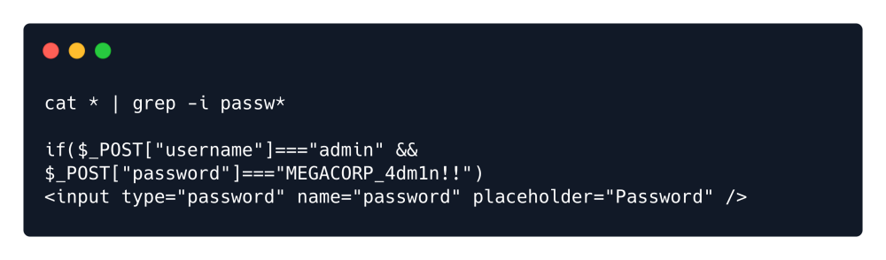

searching password
Lateral Movement
As user www-data we can't achieve many things as the role has restricted access on the system. Since the
website is making use of PHP and SQL we can enumerate further the web directory for potential disclosures
or misconfigurations. After some search we can find some interesting php files under /var/www/html/cdn-
cgi/login directory. We can manually review the source code of all the pages or we can try search for
interesting strings with the usage of grep tool. grep is a tool that searches for PATTERNS in each FILE and
print lines that match the patterns. We can use cat * to read all files while pipeing the output to grep
where we provide the pattern of a string that starts with the word passw and followed by any string such as
for example words passwd or password. We can also use the switch -i to ignore case sensitive words like
Password.
cat * | grep -i passw*
